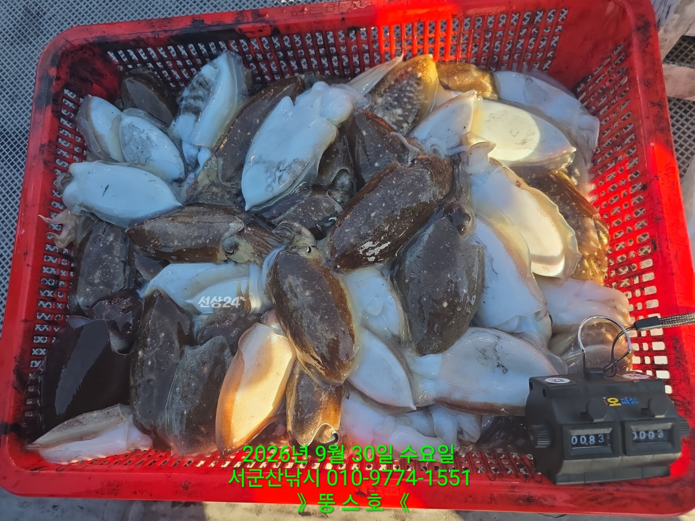
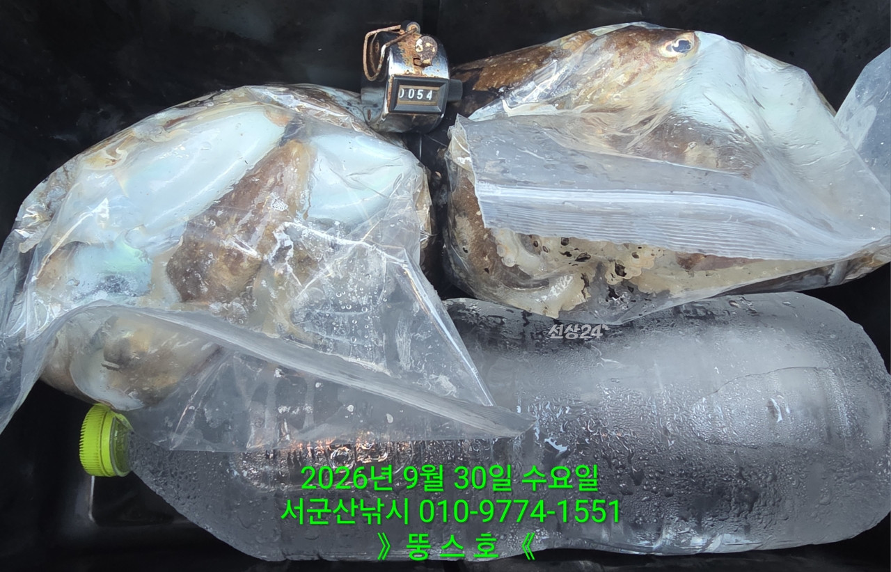
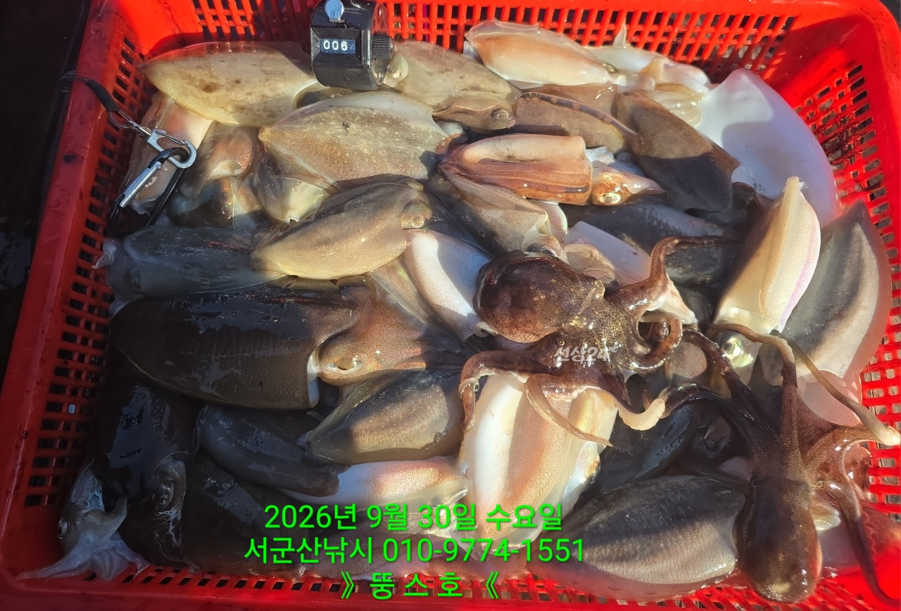
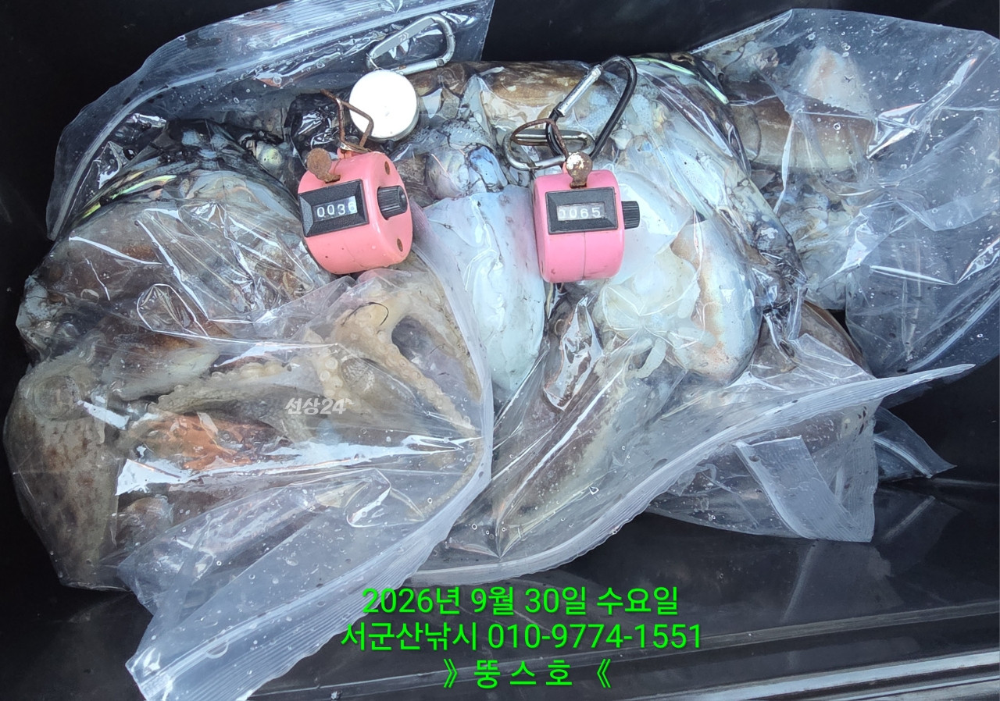

2026-09-30 · 군산 뚱스호
조황정보 HOME / 조황정보 / 조황상세
9/30 [군산 뚱스호]_갑오징어 종일반 조황 9/30 [군산 뚱스호]_갑오징어 종일반 조황 9월 30일 갑오징어종일반 조황입니다오늘은 기상이 좋다보니마릿수는 나와주는데 사이즈가 좀..오후에는 이틀동안 성과가 없어이삭줍기도 열심히 해보았으나속물이 빠르다보니 엉킴도 심했구요그래도 끝까지 열심히하신조사님들 덕에 나쁘지 않은 조황으로 마무리 하였습니다오늘오신 조사님들 고생 많으셨습니다 ■ 예약문의 : 063-466-6565 010-9774-1551■ 오시는길 : 전라북도 군산시 새만금북로277(오식도동 1002)■ 서군산낚시 실시간 예약 바로가기 : http://seo.sunsang24.com/■ 서군산낚시 밴드 바로가기 : https://band.us/band/78646704 서군산낚시 (서해안/비응항) 1.7km 갑오징어 2026. 9. 30 | 조회 529 서군산낚시 (서해안/비응항) 2026. 9. 30 | 조회 529



